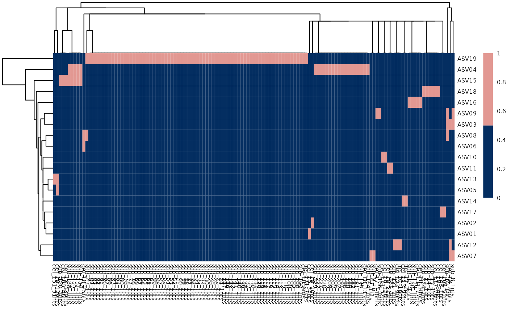
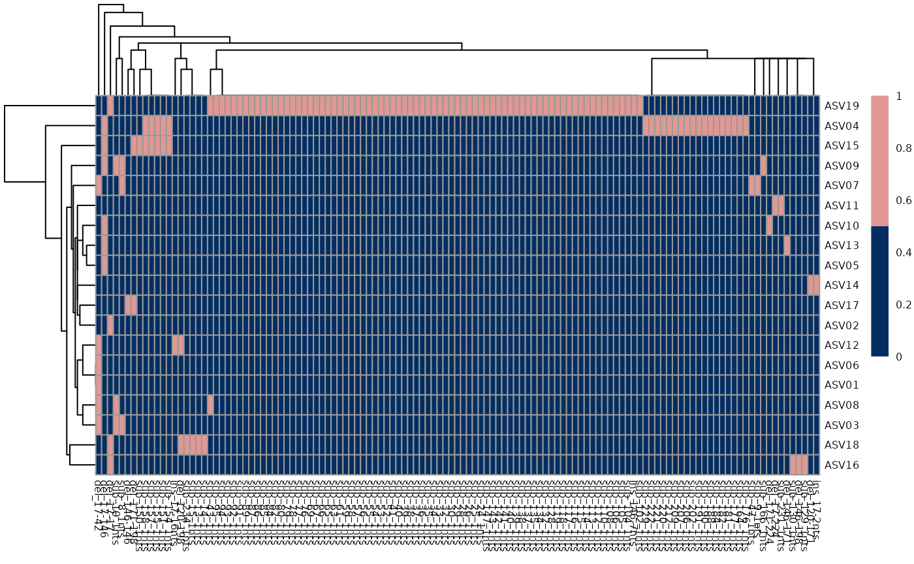

REvoBC is the computational tool inside the project EboBC. After performing EvoBC experiments in the lab, this tool can be exploited to perform the analysis of Amplicon Sequence Variants. It uses the algorithm dada2 to identify all ASVs, then performs multi-sequence alignment to identify mutations and finally performs the phylogeny reconstruction. In order to perform the analysis, there are multiple functions that perform the different steps of the analysis pipeline. The first step initializes the REvoBC object, which is a list that gets populated step-by-step with multiple fields containing the result of the analysis.
## Registered S3 methods overwritten by 'ggalt':
## method from
## grid.draw.absoluteGrob ggplot2
## grobHeight.absoluteGrob ggplot2
## grobWidth.absoluteGrob ggplot2
## grobX.absoluteGrob ggplot2
## grobY.absoluteGrob ggplot2The initialization function computes the set of Amplicon Sequence Variants, by wrapping all the steps performed by dada2, that are the following: (1) Filter and trimming reads. (2) Learning the error rates. (3) Dereplication. (4) Sample Inference. (5) Merging forward and reverse reads. (6) Construction of the Amplicon Sequence Variant table (ASV). (7) Removal of chimeras. (8) Production of a summary which tracks changes in the number of reads at every step of the pipeline.
The main parameters for the initialization are the directory where the output will be stored and one of the following: input directory: in this case users have the fastq files and want to perform the whole analysis using REvoBC. In this case they need to provide the path to the folder containing the fastq (which may be compressed), and then they can provide any additional parameter for dada2 functions. dada2_output_sequences: in case users wish to manually run dada2 steps up to the removal of bimeras, they should provide the path to the csv file containing the output. The output should contain samples on rows and sequences on columns.
Important: each fastq file pair (forward and reverse) must be associated to the sample on which the experiment was performed. The sample can be either the organ of the moouse or the an ID for the timepoint in case longitudinal data is provided. In order for REvoBC to associate each fastq pair to its sample users have two options: one is to name the fastq following this pattern: FILEPREFIX_SAMPLE_FILESUFFIX_RX.fastq, where FILEPREFIX and FILESUFFIX can be any string (without the "_" character). In this case REvoBC will consider as sample ID the second field separated by the underscore. The second option is to provide a list that associates each filename (without the suffix _R1 and _R2) to the corresponding sample. For example, if we have forward and reverse files named file1_R1.fastq and file1_R2.fastq that correspond to organ PRL (code for Prostate Left), than the parameter should be set as: map_file_sample = c(“file1” = “PRL”)).
input_dir = system.file("extdata", "input", package = "REvoBC")
output_dir = system.file("extdata", "output", package = "REvoBC")We can now perform the initialization.
revo_initialized = initialize_REvoBC(input_dir = input_dir,
output_dir = output_dir)## ℹ Found zipped fastq files, extracting## ℹ Done extracting## Found 2 fastq files## ℹ The folliwng files, mapped to the corresponding sample, were found:## MMUS1469_PRL_BC10v0_MG_120419 : PRL## ℹ Creating quality profiles figures## Warning: `guides(<scale> = FALSE)` is deprecated. Please use `guides(<scale> =
## "none")` instead.
## Warning: `guides(<scale> = FALSE)` is deprecated. Please use `guides(<scale> =
## "none")` instead.## ℹ Filtering and trimming## Overwriting file:/home/runner/work/_temp/Library/REvoBC/extdata/output/filtered_fastq/MMUS1469_PRL_BC10v0_MG_120419_F_filt.fastq.gz## Overwriting file:/home/runner/work/_temp/Library/REvoBC/extdata/output/filtered_fastq/MMUS1469_PRL_BC10v0_MG_120419_R_filt.fastq.gz## Read in 59884 paired-sequences, output 53469 (89.3%) filtered paired-sequences.## ℹ Learning errors for forward reads## 9854358 total bases in 53469 reads from 1 samples will be used for learning the error rates.## ℹ Learning errors for backward reads## 10089157 total bases in 53469 reads from 1 samples will be used for learning the error rates.## Warning: Transformation introduced infinite values in continuous y-axis## Warning: Transformation introduced infinite values in continuous y-axis
## Warning: Transformation introduced infinite values in continuous y-axis
## Warning: Transformation introduced infinite values in continuous y-axis## ℹ Dereplicating fastqs## Dereplicating sequence entries in Fastq file: /home/runner/work/_temp/Library/REvoBC/extdata/output/filtered_fastq/MMUS1469_PRL_BC10v0_MG_120419_F_filt.fastq.gz## Encountered 13495 unique sequences from 53469 total sequences read.## Dereplicating sequence entries in Fastq file: /home/runner/work/_temp/Library/REvoBC/extdata/output/filtered_fastq/MMUS1469_PRL_BC10v0_MG_120419_R_filt.fastq.gz## Encountered 15353 unique sequences from 53469 total sequences read.## ℹ Inferring samples## Sample 1 - 53469 reads in 13495 unique sequences.
## Sample 1 - 53469 reads in 15353 unique sequences.## 37644 paired-reads (in 184 unique pairings) successfully merged out of 49518 (in 645 pairings) input.## Warning: Removed 2 rows containing missing values (geom_bar).## ℹ Removing bimeras## Identified 55 bimeras out of 184 input sequences.
names(revo_initialized)## [1] "fastq_directory" "output_directory" "dada2"
## [4] "map_file_sample" "dada2_asv_prefilter"During the above computation, dada2 was run and all ASVs are detected. The result is an object of class REvoBC, which is populated by 5 fields: dada2 is a list which contains the percentage of chimeras found by dada2 and a dataframe that tracks the number of sequences during all dada2 steps. map_file_sample is a dataframe with as many rows as the number of input datasets, and for each input stores the sample (e.g. organ or day for longitudinal data) to which it is associated. dada2_asv_prefilter: dataframe that stores all sequences detected by dada2.
Next, we can perform the analysis of the ASV sequences identified by dada2. The next function finds those that map to the original barcodes and gives them the name of NMBC (Non-Marked BarCode), considering also those with a similarity higher than 98% (parameter pid_cutoff_nmbc) with the original barcode as NMBC. It also removes possible contamination artifacts (ASV that map to other barcodes used in earlier experiments). Then, it normalises the observed counts of each ASV in each sample, both by the total counts in each organ and by the total count of each ASV. It also computes additional measures of clonal richness and measures of heterogeneity for each sample based on the ASVs detected.
revo_analyzed = asv_analysis(REvoBC_object = revo_initialized, barcode = 'BC10v0')## Warning: Removed 1 rows containing missing values (position_stack).
names(revo_analyzed)## [1] "fastq_directory" "output_directory" "dada2"
## [4] "map_file_sample" "dada2_asv_prefilter" "barcode"
## [7] "clean_asv_dataframe" "statistics"There are three new fields: clean_asv_dataframe which contains the counts detected for each ASV after filtering (i.e. after filtering for contamination identification of NMBC). barcode is the barcode considered for the analysis. statistics: is a new list that contains all the results of the computation (see the manual for a detailed explanation). Among its fileds there are asv_df_percentages, which contains the normalized counts, and asv_diversity_perSample which contains the measures of clonal heterpgeneity.
revo_msa = perform_msa(revo_analyzed)##
## MUSCLE v3.8.31 by Robert C. Edgar
##
## http://www.drive5.com/muscle
## This software is donated to the public domain.
## Please cite: Edgar, R.C. Nucleic Acids Res 32(5), 1792-97.
##
## file10bb27be0683e 20 seqs, max length 261, avg length 176
## 1768 MB(25%)00:00:00 Iter 1 0.48% K-mer dist pass 1
1768 MB(25%)00:00:00 Iter 1 100.00% K-mer dist pass 1
## 1768 MB(25%)00:00:00 Iter 1 0.48% K-mer dist pass 2
1768 MB(25%)00:00:00 Iter 1 100.00% K-mer dist pass 2
## 1768 MB(25%)00:00:00 Iter 1 5.26% Align node
1768 MB(25%)00:00:00 Iter 1 10.53% Align node
1768 MB(25%)00:00:00 Iter 1 15.79% Align node
1768 MB(25%)00:00:00 Iter 1 21.05% Align node
1768 MB(25%)00:00:00 Iter 1 26.32% Align node
1768 MB(25%)00:00:00 Iter 1 31.58% Align node
1768 MB(25%)00:00:00 Iter 1 36.84% Align node
1768 MB(25%)00:00:00 Iter 1 42.11% Align node
1768 MB(25%)00:00:00 Iter 1 47.37% Align node
1768 MB(25%)00:00:00 Iter 1 52.63% Align node
1768 MB(25%)00:00:00 Iter 1 57.89% Align node
1768 MB(25%)00:00:00 Iter 1 63.16% Align node
1768 MB(25%)00:00:00 Iter 1 68.42% Align node
1768 MB(25%)00:00:00 Iter 1 73.68% Align node
1768 MB(25%)00:00:00 Iter 1 78.95% Align node
1768 MB(25%)00:00:00 Iter 1 84.21% Align node
1768 MB(25%)00:00:00 Iter 1 89.47% Align node
1768 MB(25%)00:00:00 Iter 1 94.74% Align node
1768 MB(25%)00:00:00 Iter 1 100.00% Align node
1768 MB(25%)00:00:00 Iter 1 100.00% Align node
## 1768 MB(25%)00:00:00 Iter 1 5.00% Root alignment
1768 MB(25%)00:00:00 Iter 1 10.00% Root alignment
1768 MB(25%)00:00:00 Iter 1 15.00% Root alignment
1768 MB(25%)00:00:00 Iter 1 20.00% Root alignment
1768 MB(25%)00:00:00 Iter 1 25.00% Root alignment
1768 MB(25%)00:00:00 Iter 1 30.00% Root alignment
1768 MB(25%)00:00:00 Iter 1 35.00% Root alignment
1768 MB(25%)00:00:00 Iter 1 40.00% Root alignment
1768 MB(25%)00:00:00 Iter 1 45.00% Root alignment
1768 MB(25%)00:00:00 Iter 1 50.00% Root alignment
1768 MB(25%)00:00:00 Iter 1 55.00% Root alignment
1768 MB(25%)00:00:00 Iter 1 60.00% Root alignment
1768 MB(25%)00:00:00 Iter 1 65.00% Root alignment
1768 MB(25%)00:00:00 Iter 1 70.00% Root alignment
1768 MB(25%)00:00:00 Iter 1 75.00% Root alignment
1768 MB(25%)00:00:00 Iter 1 80.00% Root alignment
1768 MB(25%)00:00:00 Iter 1 85.00% Root alignment
1768 MB(25%)00:00:00 Iter 1 90.00% Root alignment
1768 MB(25%)00:00:00 Iter 1 95.00% Root alignment
1768 MB(25%)00:00:00 Iter 1 100.00% Root alignment
1768 MB(25%)00:00:00 Iter 1 100.00% Root alignment
## 1768 MB(25%)00:00:00 Iter 2 5.56% Refine tree
1768 MB(25%)00:00:00 Iter 2 11.11% Refine tree
1768 MB(25%)00:00:00 Iter 2 16.67% Refine tree
1768 MB(25%)00:00:00 Iter 2 22.22% Refine tree
1768 MB(25%)00:00:00 Iter 2 27.78% Refine tree
1768 MB(25%)00:00:00 Iter 2 33.33% Refine tree
1768 MB(25%)00:00:00 Iter 2 38.89% Refine tree
1768 MB(25%)00:00:00 Iter 2 44.44% Refine tree
1768 MB(25%)00:00:00 Iter 2 50.00% Refine tree
1768 MB(25%)00:00:00 Iter 2 55.56% Refine tree
1768 MB(25%)00:00:00 Iter 2 61.11% Refine tree
1768 MB(25%)00:00:00 Iter 2 66.67% Refine tree
1768 MB(25%)00:00:00 Iter 2 72.22% Refine tree
1768 MB(25%)00:00:00 Iter 2 77.78% Refine tree
1768 MB(25%)00:00:00 Iter 2 83.33% Refine tree
1768 MB(25%)00:00:00 Iter 2 88.89% Refine tree
1768 MB(25%)00:00:00 Iter 2 94.44% Refine tree
1768 MB(25%)00:00:00 Iter 2 100.00% Refine tree
1768 MB(25%)00:00:00 Iter 2 105.56% Refine tree
1768 MB(25%)00:00:00 Iter 2 100.00% Refine tree
## 1768 MB(25%)00:00:00 Iter 2 5.00% Root alignment
1768 MB(25%)00:00:00 Iter 2 10.00% Root alignment
1768 MB(25%)00:00:00 Iter 2 15.00% Root alignment
1768 MB(25%)00:00:00 Iter 2 20.00% Root alignment
1768 MB(25%)00:00:00 Iter 2 25.00% Root alignment
1768 MB(25%)00:00:00 Iter 2 30.00% Root alignment
1768 MB(25%)00:00:00 Iter 2 35.00% Root alignment
1768 MB(25%)00:00:00 Iter 2 40.00% Root alignment
1768 MB(25%)00:00:00 Iter 2 45.00% Root alignment
1768 MB(25%)00:00:00 Iter 2 50.00% Root alignment
1768 MB(25%)00:00:00 Iter 2 55.00% Root alignment
1768 MB(25%)00:00:00 Iter 2 60.00% Root alignment
1768 MB(25%)00:00:00 Iter 2 65.00% Root alignment
1768 MB(25%)00:00:00 Iter 2 70.00% Root alignment
1768 MB(25%)00:00:00 Iter 2 75.00% Root alignment
1768 MB(25%)00:00:00 Iter 2 80.00% Root alignment
1768 MB(25%)00:00:00 Iter 2 85.00% Root alignment
1768 MB(25%)00:00:00 Iter 2 90.00% Root alignment
1768 MB(25%)00:00:00 Iter 2 95.00% Root alignment
1768 MB(25%)00:00:00 Iter 2 100.00% Root alignment
1768 MB(25%)00:00:00 Iter 2 100.00% Root alignment
## 1768 MB(25%)00:00:00 Iter 2 100.00% Root alignment
## 1768 MB(25%)00:00:00 Iter 3 5.41% Refine biparts
1768 MB(25%)00:00:00 Iter 3 8.11% Refine biparts
1768 MB(25%)00:00:00 Iter 3 10.81% Refine biparts
1768 MB(25%)00:00:00 Iter 3 13.51% Refine biparts
1768 MB(25%)00:00:00 Iter 3 16.22% Refine biparts
1768 MB(25%)00:00:00 Iter 3 18.92% Refine biparts
1768 MB(25%)00:00:00 Iter 3 21.62% Refine biparts
1768 MB(25%)00:00:00 Iter 3 24.32% Refine biparts
1768 MB(25%)00:00:00 Iter 3 27.03% Refine biparts
1768 MB(25%)00:00:00 Iter 3 29.73% Refine biparts
1768 MB(25%)00:00:00 Iter 3 32.43% Refine biparts
1768 MB(25%)00:00:00 Iter 3 35.14% Refine biparts
1768 MB(25%)00:00:00 Iter 3 37.84% Refine biparts
1768 MB(25%)00:00:00 Iter 3 40.54% Refine biparts
1768 MB(25%)00:00:00 Iter 3 43.24% Refine biparts
1768 MB(25%)00:00:00 Iter 3 45.95% Refine biparts
1768 MB(25%)00:00:00 Iter 3 48.65% Refine biparts
1768 MB(25%)00:00:00 Iter 3 51.35% Refine biparts
1768 MB(25%)00:00:00 Iter 3 54.05% Refine biparts
1768 MB(25%)00:00:00 Iter 3 56.76% Refine biparts
1768 MB(25%)00:00:00 Iter 3 59.46% Refine biparts
1768 MB(25%)00:00:00 Iter 3 62.16% Refine biparts
1768 MB(25%)00:00:00 Iter 3 64.86% Refine biparts
1768 MB(25%)00:00:00 Iter 3 67.57% Refine biparts
1768 MB(25%)00:00:00 Iter 3 70.27% Refine biparts
1768 MB(25%)00:00:00 Iter 3 72.97% Refine biparts
1768 MB(25%)00:00:00 Iter 3 75.68% Refine biparts
1768 MB(25%)00:00:00 Iter 3 78.38% Refine biparts
1768 MB(25%)00:00:00 Iter 3 81.08% Refine biparts
1768 MB(25%)00:00:00 Iter 3 83.78% Refine biparts
1768 MB(25%)00:00:00 Iter 3 86.49% Refine biparts
1768 MB(25%)00:00:00 Iter 3 89.19% Refine biparts
1768 MB(25%)00:00:00 Iter 3 91.89% Refine biparts
1768 MB(25%)00:00:00 Iter 3 94.59% Refine biparts
1768 MB(25%)00:00:00 Iter 3 97.30% Refine biparts
1768 MB(25%)00:00:00 Iter 3 100.00% Refine biparts
1768 MB(25%)00:00:00 Iter 3 102.70% Refine biparts
1768 MB(25%)00:00:00 Iter 3 100.00% Refine biparts
## 1768 MB(25%)00:00:00 Iter 4 5.41% Refine biparts
1768 MB(25%)00:00:00 Iter 4 8.11% Refine biparts
1768 MB(25%)00:00:00 Iter 4 10.81% Refine biparts
1768 MB(25%)00:00:00 Iter 4 13.51% Refine biparts
1768 MB(25%)00:00:00 Iter 4 16.22% Refine biparts
1768 MB(25%)00:00:00 Iter 4 18.92% Refine biparts
1768 MB(25%)00:00:00 Iter 4 21.62% Refine biparts
1768 MB(25%)00:00:00 Iter 4 24.32% Refine biparts
1768 MB(25%)00:00:00 Iter 4 27.03% Refine biparts
1768 MB(25%)00:00:00 Iter 4 29.73% Refine biparts
1768 MB(25%)00:00:00 Iter 4 32.43% Refine biparts
1768 MB(25%)00:00:00 Iter 4 35.14% Refine biparts
1768 MB(25%)00:00:00 Iter 4 37.84% Refine biparts
1768 MB(25%)00:00:00 Iter 4 40.54% Refine biparts
1768 MB(25%)00:00:00 Iter 4 43.24% Refine biparts
1768 MB(25%)00:00:00 Iter 4 45.95% Refine biparts
1768 MB(25%)00:00:00 Iter 4 48.65% Refine biparts
1768 MB(25%)00:00:00 Iter 4 51.35% Refine biparts
1768 MB(25%)00:00:00 Iter 4 54.05% Refine biparts
1768 MB(25%)00:00:00 Iter 4 56.76% Refine biparts
1768 MB(25%)00:00:00 Iter 4 59.46% Refine biparts
1768 MB(25%)00:00:00 Iter 4 62.16% Refine biparts
1768 MB(25%)00:00:00 Iter 4 64.86% Refine biparts
1768 MB(25%)00:00:00 Iter 4 67.57% Refine biparts
1768 MB(25%)00:00:00 Iter 4 70.27% Refine biparts
1768 MB(25%)00:00:00 Iter 4 72.97% Refine biparts
1768 MB(25%)00:00:00 Iter 4 75.68% Refine biparts
1768 MB(25%)00:00:00 Iter 4 78.38% Refine biparts
1768 MB(25%)00:00:00 Iter 4 81.08% Refine biparts
1768 MB(25%)00:00:00 Iter 4 83.78% Refine biparts
1768 MB(25%)00:00:00 Iter 4 86.49% Refine biparts
1768 MB(25%)00:00:00 Iter 4 89.19% Refine biparts
1768 MB(25%)00:00:00 Iter 4 91.89% Refine biparts
1768 MB(25%)00:00:00 Iter 4 94.59% Refine biparts
1768 MB(25%)00:00:00 Iter 4 97.30% Refine biparts
1768 MB(25%)00:00:00 Iter 4 100.00% Refine biparts
1768 MB(25%)00:00:00 Iter 4 102.70% Refine biparts
1768 MB(25%)00:00:00 Iter 4 100.00% Refine biparts
## 1768 MB(25%)00:00:00 Iter 5 5.41% Refine biparts
1768 MB(25%)00:00:00 Iter 5 8.11% Refine biparts
1768 MB(25%)00:00:00 Iter 5 10.81% Refine biparts
1768 MB(25%)00:00:00 Iter 5 100.00% Refine biparts
## 1768 MB(25%)00:00:00 Iter 5 100.00% Refine biparts## Warning: position_stack requires non-overlapping x intervals
## Warning: position_stack requires non-overlapping x intervals
This step performs multi sequence alignemnt among the filtered ASVs. Alignment is performed using muscle, and users can provide any optional parameter for the algorithm through this function. After MSA, REvoBC identifies, for each position in the original barcode, the number of alterations found on the different ASVs. The final result is shown in figure gghist_del_sub_ins_perc.pdf which indicates for each position the frequency of the different mutations in each sample. This computation stores inside the REvoBC object a new field called alignment, which gets populated by 5 new fields: msa_stringset is the output of multiple sequence alignemnt performed by muscle; mutations_df is a tibble where each line corresponds to a nucleotide in each ASV with the corresponding sample in which it was found, and it indicates whether the nucletide is mutated, the type of alteration and the frequency of that mutation in the corresponding sample; asv_alteration_width is another tibble which stores the number of nucleotides affected by each type of alteration in each ASV; mutations_coordinates contains the details about mutations, with the start and end positions and the corresponding mutated sequence (note that consecutive nucleotides affected by either an insertion or a deletion will be put toghether and considered ad a unique mutation); binary_mutations_matrix is finally a binary tibble, where each line corresponds to an ASV, and each column corresponds to a mutation. 1 and 0 indicate respectively the presence or absence of the mutation in the ASV.
This function also creates a new field in the REvoBC object called , which contains the following information for all the deletions identified in the ASVs, whose start and end site have been smoothed using the known cutting sites. Smoothing is performed in the following way: the start site of each deletion is assigned to the cutting site on their left if that is less distant then 5 nucleotides, otherwise they are assigned to the cutting site on their right. The end site is assigned to the cutting site on its right if that is less than 5 nucleotides distant, otherwise it is assigned to the cutting site on its left.
revo_phyl = infer_phylogeny(revo_msa, phylip_package_path = 'C:/Users/*/Program Files/phylip-3.698/exe/')This step computes the phylogeny, using the binary mutation matrix computed in the previous step. Phylogeny is computed using camin-sokal method, using the implementation found in the package Rphylip. Note that prior to running this function, users should install PHYLIP and then provide the path to the folder containing the binary of mix using the parameter phylip_package_path. This functions infers the phylogeny and store the resulting tree inside the field phylogeny of the REvoBC objetc.
summary_figre = plot_summary(revo_phyl)Finally, a summary plot is prodced and stored in the output directory associated to the REvoBC object. This plot is composed by 7 panels: the first contains the tree representation; then, there is a graphical representation of each ASV, that gives information about the position of all its mutations; next there is a barplot indicating the total number of nucletoides affected by each alteration type in each ASV; next there is a second barplot indicating the length of each ASV; next we find a bubble plot, which encodes the percentage sequence similarity of each ASV with respect to the original barcode; finally, there is a dot plot where the size of each dot indicate the frequency of each ASV normalized by the total counts found in the corresponding sample, and the color of the dot represent the count normalized to the highest counts found for the same ASV in another sample.